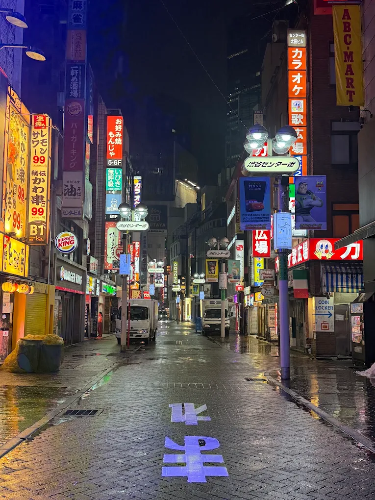
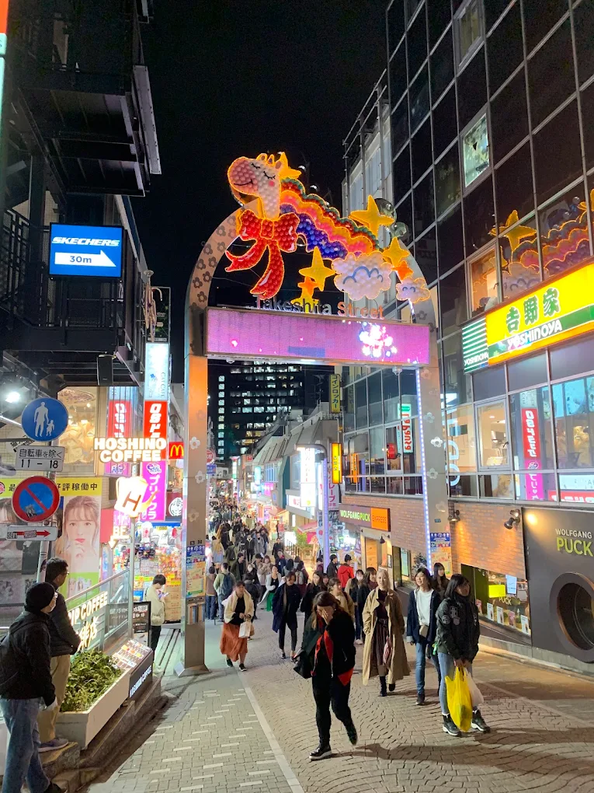
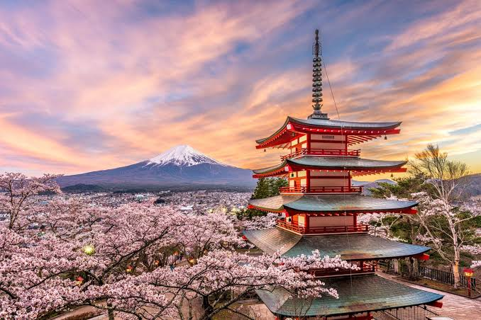

A VISUAL JOURNEY THROUGH JAPAN
A City of
Contrasts.
Quiet temples, electric streets, and little moments in
between. Discover a different side of Tokyo.
01 / DISCOVER
Where tradition meets tomorrow.
MORE THAN A DESTINATION
Tokyo is a city that never stops surprising you. One moment, you are surrounded by bright signs and busy crossings. A few streets away, you might discover a quiet shrine hidden between modern buildings.
What makes Tokyo special is this way old and new exist side by side. Every neighborhood has its own rhythm, atmosphere, and story to tell.
“The best way to explore Tokyo is to get a little lost.”

02 / NEIGHBORHOODS
Slow down. Look closer.

THE QUIETER SIDE
Beyond the crowded stations and famous landmarks, Tokyo is full of peaceful corners. Small cafes, traditional shops, and narrow streets invite visitors to take their time.
Spend an afternoon walking without a strict plan. Notice the details: wooden doors, warm lanterns, tiny gardens, and the everyday life happening all around you.
Sometimes the most memorable places are the ones you never planned to visit.
03 / PHOTO JOURNAL
Tokyo in three frames.
123
123
123